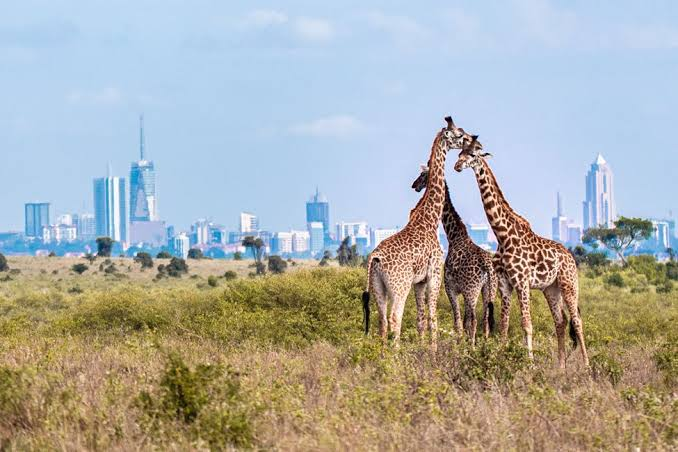

Most capital cities are known for traffic, museums and tall buildings. Nairobi has all of those, but it also has something almost no other capital in the world can claim: a real national park, with real lions, just minutes from the city centre.
Nairobi National Park opened in 1946 and covers about 117 square kilometres. On one side of its fence you will find rhinos, giraffes, zebras and buffalo. On the other side you will find apartment blocks, office towers and the daily rush of the Mombasa Road.